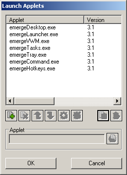
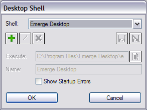

| About |
emergeCore, as the name indicates, is the core component of Emerge Desktop. It is the messaging interface between all the other Emerge Desktop applets.
It also launches the startup programs and the Microsoft DDE Server.
| Configuration |
Three major components of Emerge Desktop are dependent on emergeCore:
(1) the execution (i.e. "loading") of the applets, which is configured in the Launch Applets configuration dialog box,
(2) the Shell Changer, which allows to set Emerge Desktop (or any other alternate shell) as the shell for the Current User, or to switch to Windows Explorer, and
(3) the Theme Manager.
To display the Launch Applets configuration dialog box, the user must right-click on the desktop, select Settings, and Edit Launch Applets:

(alternatively the user can type CoreLaunchEditor in the emergeCommand command window)
To Add a new applet to emergeCore, the user must Browse to the applet's executable, Save the item (or Discard to start over), highlight it in the Applet list, and Start , which switches the applet's State from Unloaded to Loaded (i.e. executes the applet).
To stop an applet (i.e. go from Loaded to Unloaded state), the user must highlight it in the Applet list and click on Stop .
To delete an applet (which only removes it from the Applet list), the user must click on Delete .
The Up and Down buttons are used to change the loading order of the applets.
The Info button displays the highlighted applet's name, version and authors.
The Gather button moves the highlighted applet's window (if it has one) next to the Launch Applets dialog box for when it can't be located on the desktop.
Pressing the OK button saves the current settings and closes the configuration dialog box.
After the user adds, deletes or modifies incorrectly an item, she can undo changes by clicking the Cancel button. A dialog box will open asking for confirmation to close the configuration dialog box without saving the changes made.
To display the Desktop Shell dialog box, the user must right-click on the desktop, select Settings, and Change Desktop Shell:

(Alternatively the user can use the shortcut "Emerge Desktop Shell Changer" in the Emerge Desktop program group in the Start menu (which can be accessed both when Windows Explorer or Emerge Desktop is the shell). Also, the user can type CoreShellChanger in the emergeCommand command window.)
Emerge Desktop and Windows Explorer are listed in the Shell drop list (and cannot be removed from it).
The user can Add other shells to the list by Browsing to the file, defining a Name, and then clicking on Save to save the item (or Discard to start over).
An added shell can be modified or deleted by selecting it from the drop list and pressing the Modify or Delete button.
If Show Startup Errors is checked, missing startup items generate an error message.
To switch from one shell to another, the user must select a new shell from the drop list, and click on the OK button. After rebooting or loging off and back on, Windows will load the new shell.
| Usage |
emergeCore also supports command line switches (see Emerge Desktop Command Line Switches).